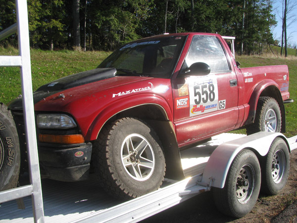
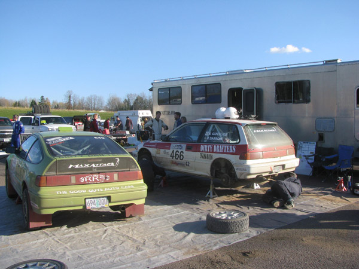
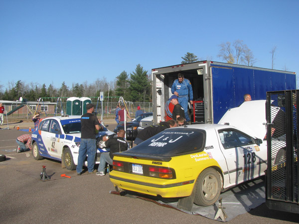
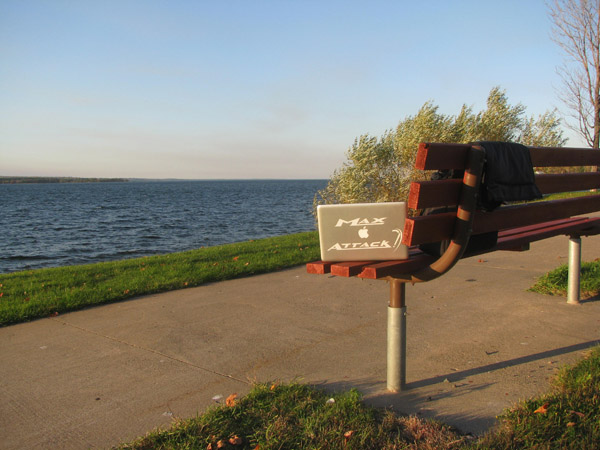

Jim Cox, Driver, #558 Chevrolet S10
We bent the upper control arm right away on the first stage. We're kind of gutted, and obviously really bummed out. Rally can be that way, but we'll get ready for next time. It just let go. Near as we can tell it's probably a fatigue thing, we've noticed the alignment changing the last couple of events and assumed it was just some loose hardware. Obviously it was some parts starting to bend.
Karen Wagner, Co-Driver, #52 Dodge SRT 4
The stages went great. We have a little bit of a turbo issue, so we're down on power, but it's nothing a veteran like Doug can't handle. These stages are just a blast, I love these stages, I love this rally. It was unfortunate to see Lauchlin get the flat, we caught him on stage and got in his dust.
Scott Putnam, Co-Driver, #90 Dodge SRT 4
We got a flat about 2.78 miles from the end. It seemed to be going flat, then gradually deteriorated and eventually ended up down at the Rim. It was the driver's side front, it was a little sketchy going around right corners.

The suspension collapsed on Jim Cox's Chevrolet S10
Billy Irvin, Co-Driver, #649 Honda CRX
The first two stages were really not in our element in the gravel pit. A little rough, a little loose. The second one felt better than the first. Stage 3 was probably the favorite stage that me and Cody have ever run together. Fast, flowing, big off-camber jumps. We're feeling good, but have a little bit of suspension problems.
Jody Zedril, Co-Driver, #708 Mitsubishi Lancer
The notes were not what we expected in the first super specials. We talked to a lot of drivers, they had the same problem. On the second past we corrected a lot based on memory, and it went a lot better. Stages 3 and 4 went quite well. There's a lot of water in one section where Krolikowskis went off, that wasn't marked in the notes. We were pretty lucky there, we were able to slow down just in time for that. This last stage was lots of fun, a blast. Unfortunately we're not doing that one again.
Chris Greenhouse, Driver, #319 Plymouth Neon
The first four stages went pretty well, this is our first time working together. We seem to be synched on the notes very well. I'm real happy with that. On Stage 2 I didn't listen, because he said "Left 2 no cut" and I cut and hit a big something or other. So the front of the car is not quite as straight as when they started the rally, but the stage times are still good. We had a good run on Herman and we think we had a pretty good run on Menge Creek. So far so good!
Jimmy Brandt, Co-Driver, #555 Ford Sierra
The first four stages went swell, but long ago I had a crew chief, Salty Salttolano, who told me that if you didn't have a moment a stage you weren't trying. We had a large moment on Herman, and a large moment on Menge Creek. The moment on Herman was not in the notes, there was big water where the Krolikowskis went off. Fortunately the triangles slowed us down a bit or we might have joined them. Menge was slippier than I remember, so we were a bit sideways and went up on the bank, maybe a 45 degree tilt, but it was just a roller coaster ride and we rode it out. No blood, no foul.

The Dirty Drifters' service compound
Pat Darrow, Co-Driver, #466 Honda Civic
It's a new car, we're shaking out all of our little bugs, and there's a lot less of them than there was in the old car. We're very happy just trying to come to pace with the roads and with the new car slowly so it stays on the road.
Jim Scray, Driver, #510 Datsun 510
The first four stages were wonderful. Started out at the gravel pit, that felt good, it's just a short little stage. Then we got out on Herman and Menge Creek, and those are fast, fun stages. The car is running great, feels great, handles great, can't really expect much more out of it.
Eric Burmeister, Driver, #42 Mazdaspeed3
We hit a pretty good-sized rut on Stage 2; I tried to take one of the corners a little tighter the second time around and found a rut. Everything held together, and no major issues whatsoever. Just having a good time and enjoying the stages. Very fun stages!
Mike Summers, Driver, #128 Mazda RX-7
The gravel pit was a little rough, but we really enjoyed Menge Creek with the rear-wheel-drive this year. Nestoria we've run quite a few times. The rear-wheel drive is just awesome.
Joel Sanford, Co-Driver, #622 BMW 325i
The first two stages, I was trying to learn notes, so it was a little tough. The last two stages we were flying, so we were pretty happy with our times. The stages were great. We've never run Menge Creek before, that was quite a good stage to run. We are adjusting to be on the other side of the car from before; after we got our first few arguments out of the way we were good.
John Huebbe, Co-Driver, #242 VW Beetle
We took it conservative on the first stage, probably overly conservative, since this is the first time we've ever been to LSPR in the car. I think it was a pretty good choice. The last two stages we really got up to speed. Stage 4 I think we actually put some time on some of the guys we are matching. The car seems to be running pretty good.
Matti Himes, Co-Driver, #535 Honda Civic
The big jump on Herman, we came in pretty hot and we went pretty far. We came down really hard and we ended up breaking an axle and getting a flat tire in the left front. We had to nurse it through the transit and Menge as well, but it was wild!

The Mazda zone at the L'Anse service.
Sean Murphy, Driver, #286 VW Golf
We had a small off and kicked out the rear toe, so it's a little bit more of a handful than it should be. It's not slowing us down too much.
Kenneth Tsang, Co-Driver, #286 VW Golf
The first two stages we got a little lost in the notes, after that it went a little smoother. We ha a little bit of an off, that was exciting, but it's going pretty well. We're not last, and we're still here. Having a lot of fun.
Chris O'Driscoll, Driver, #933 Honda CRX
We hit a little hydroplane action. There was a part in the notes that didn't really say water at all, and it was like 6 to 8 inches deep for like a hundred feet long at least. We just hydroplaned and came onto the gravel backwards, and went off into the soup on the side in the weeds. We had to wait for the sweepers to pull us out, and then we railed on ahead in front of the sweep cars. We're still in it.
Erik Hill, Driver, #864 Eagle Talon
The first four stages are going awesome. Between Ojibwe and here we've put a lot of work into the car. I rebuilt the head and everything, so the car's running as fast as it ever has. The roads are a blast, I caught a car on stage. I like the off-camber curves coming over crests. Fun roads!
Matt Bushore, Driver, #548 VW Jetta
The first four stages have been pretty smooth, but we're really not as fast as a [Chris] Greenhouse type person, which is generally who we're chasing, or being chased by, so he's kind of our rabbit. The car is running well, we did a bunch of work to it, it needed it, the car feels better than it has in years. We had a flat tire in the first stage, actually, that kind of hurt us. Beyond that it feels pretty good. Menge Creek is awesome, the tail end of that is more fun than should be legal.
Paul Donlin, Driver, #666 Ford Escort
This whole race has been kind of a finisher for me. I've had some bad luck lately, so I've been taking it really easy on the first couple stages. After seeing how many people went off, it turns out that was probably a good strategy. The car is running fantastic. I've got a clunk I can't figure out, but who cares? Herman has probably been my favorite stage so far.
Curt Faigle, Driver, #635 Saab 900
Had a couple little offs, no big deal, just some minor damage with the lights. The big thing is the car started overheating, before the start of Stage 4, the coolant was pouring out everywhere. Thankfully there was a marshal who had a gallon of coolant we dumped, and we made it back here. Hopefully the crew can get it back. Stage 3 seemed a bit slippy, Stage 4 was just beautiful, great rhythm.
Ben Slocum, Co-Driver, #98 VW Jetta
We tweaked the front suspension a little bit, and the steering, with that nasty nasty water hole on Herman. We ended up finding out what caused that. Apparently a beaver dam burst between when they did the final course check yesterday and today when they ran the cars. We've got a VR6 motor in the Jetta, so it's actually quite torquey for the standard Volkswagen. It's a good, solid car, we've just been having some fun. Mike's been out of it for a while so we're not pushing it to the limit, plus it's our first time working together. We're here to enjoy the event and get Mike back in the groove.

Sometimes I get stuck in the worst places doing MaxAttack! updates. My "office" in L'Anse.